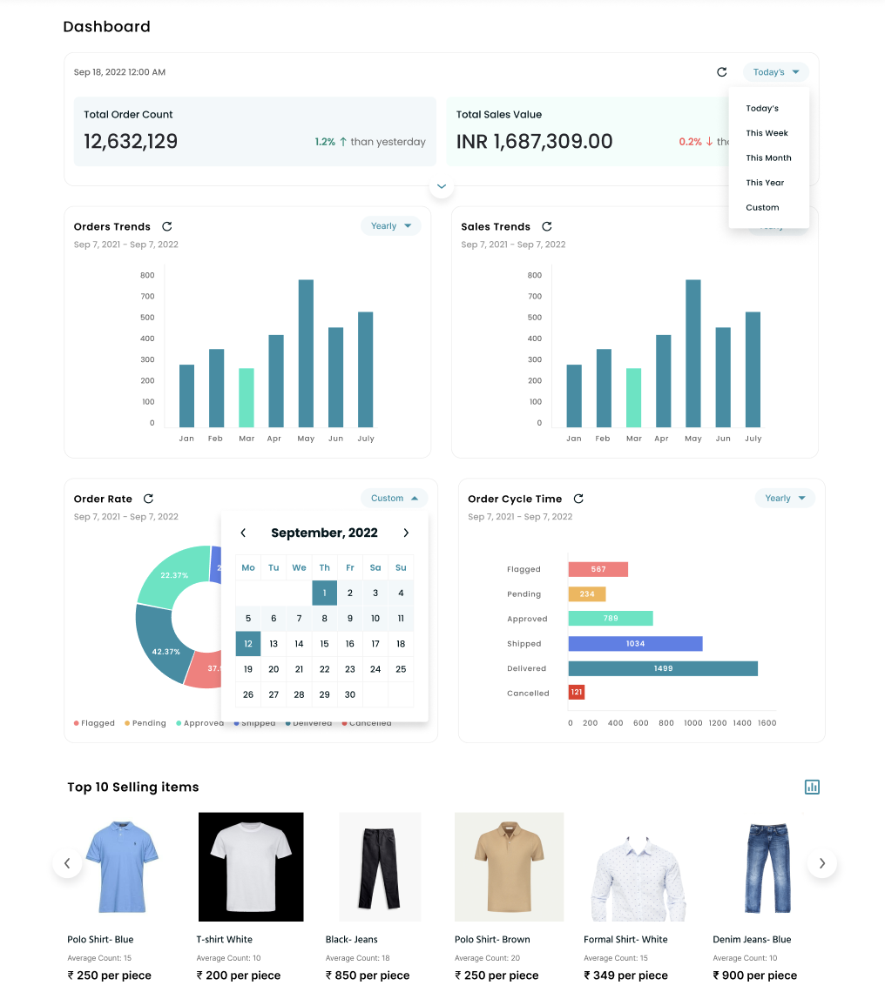
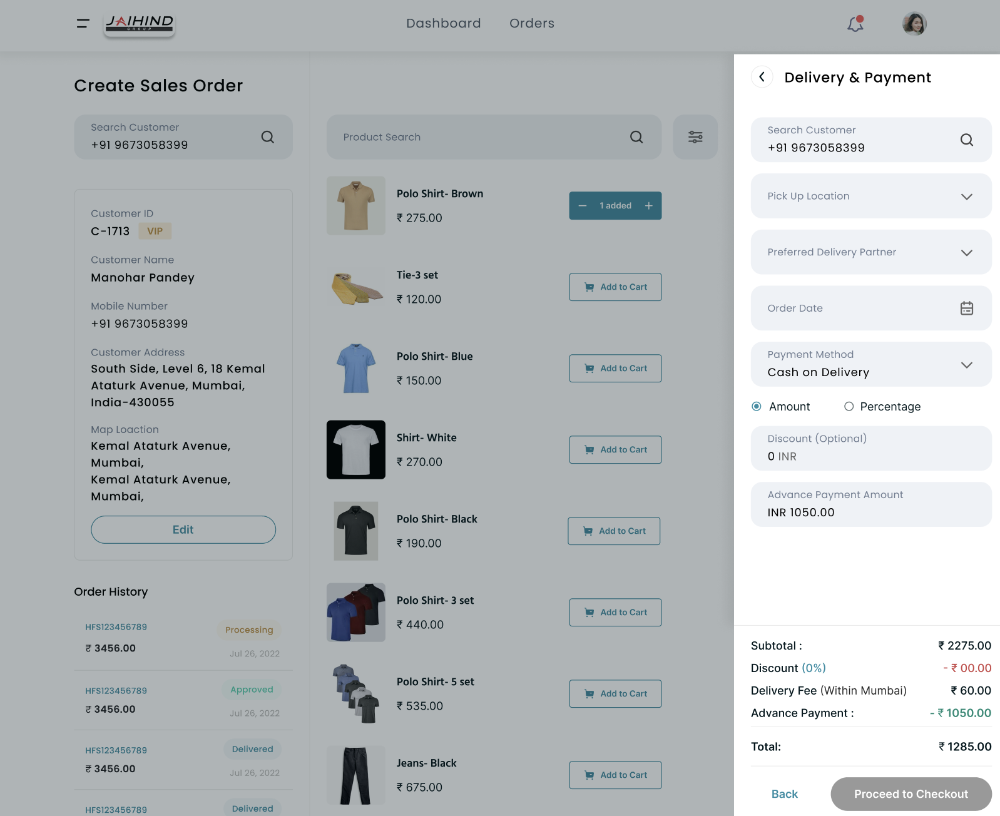
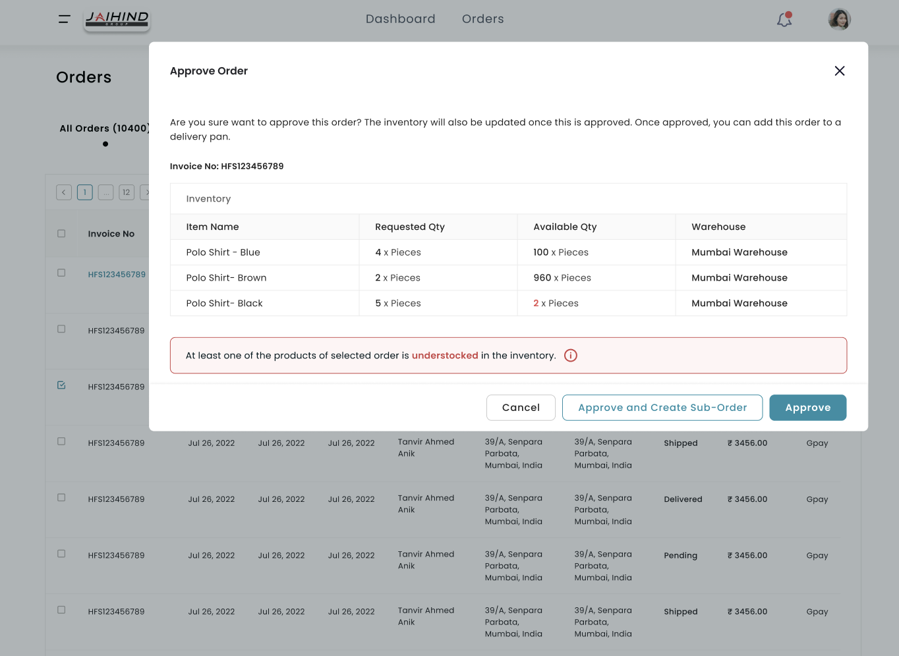
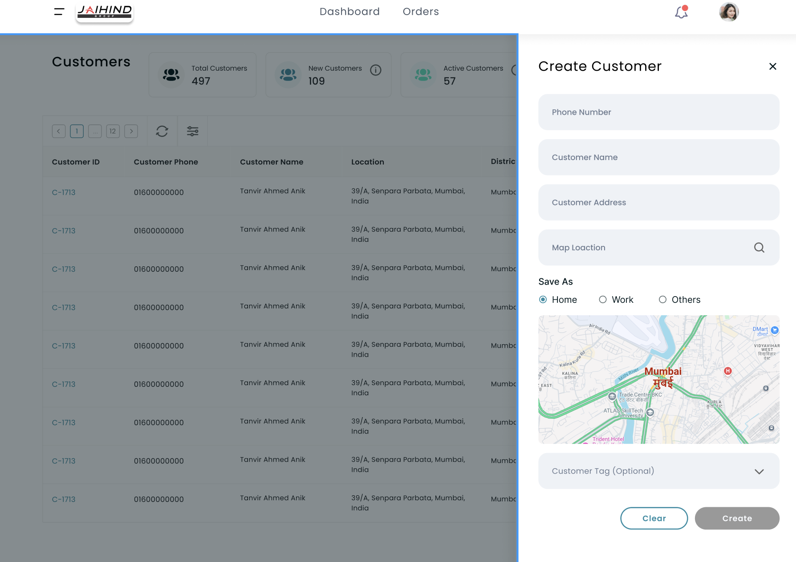

Five spreadsheets.
Three teams.
One dashboard.
How Jai Hind Group replaced a phone-and-spreadsheet operation with a unified internal platform built for the people actually using it daily.
Jai Hind Group is a B2B uniform and clothing supplier serving hotels, schools, and vendors across the region. When I joined, the entire operation ran on phone calls, printed business cards, and five disconnected spreadsheets owned by three different teams. Orders were missed. Stock was miscounted. New staff took weeks to learn a system that nobody had designed on purpose.

Specific sales data obfuscated due to B2B confidentiality. Workflow and process documentation shown in full.
How the business actually worked
"The data existed. It just lived in five different places, owned by five different people, updated at five different times."
Observed pattern across all 8 stakeholder interviewsLet's take an example
A typical order, start to finish
This was not an edge case. It was the standard operating procedure.
No step in this flow had a digital record shared across teams. Every handoff between sales, warehouse, and merchandising happened verbally or by phone, then got recorded independently in separate tools.
The five spreadsheets were not a symptom of bad habits. They were the entire system.
What was breaking and why
Three root problems, all connected to the same gap: no single source of truth.
No order visibility across teams
Each team recorded orders independently. A sale confirmed by the sales team would not appear in the warehouse's spreadsheet until someone manually updated it, often hours later. Errors appeared only at delivery.
Scattered customer and stock data
Stock counts lived in one sheet. Customer records in another. Order history in a third. Answering a single question, like whether a repeat client's usual size was in stock, required opening three files and reconciling the data by hand.
Error-prone manual entry
All order entry happened by phone and was transcribed by hand. Quantities, size splits, and client details were frequently wrong, and there was no validation layer to catch mistakes before they became fulfilled orders.
What the dashboard needed to do
The shift we were designing for
Reduce errors at the point of entry
Build validation into order creation so size, quantity, and client mismatches surface before confirmation, not after delivery.
Give every team real-time visibility
Stock counts, order status, and customer history should update instantly across warehouse, merchandising, and sales without any manual sync.
Support B2B scale, not just current volume
The system should handle growth without requiring new spreadsheets. One platform for all product lines, all clients, all teams.
What I was responsible for
I joined as Product UX Designer on a team of 3 designers and a PM. My ownership covered research through handoff.
Stakeholder research: Led 8 interviews across warehouse, merchandising, and sales. Mapped 30+ operational requirements and grouped them by task frequency and decision urgency to inform the IA.
Information architecture: Defined the navigational structure of the platform. Organized every feature by how often each team needed it and how quickly they needed to act on it.
High-fidelity UI design: Designed all primary screens including the dashboard overview, stock management table, alert system, and order entry flow. Built for density: 30+ data points per screen without cognitive overload.
Design decisions under constraint: Made documented tradeoff calls on table vs card layout, unified vs role-split views, and inline vs modal editing. Each decision is documented in the Decisions section below.
Dev handoff: Delivered complete Figma specs including interaction states, edge cases, empty states, and data density variants across all breakpoints.
Who the platform was built for
Three teams. Different daily tasks. One shared frustration.
Rajan Mehta
Warehouse Manager, highest login frequencyDaily task
Track incoming stock, update quantities, respond to availability queries from sales.
Core frustration
Discovering stockouts only when an order fails. No way to check proactively across categories.
What success looks like
Real-time stock levels. Alerts before a stockout, not after.
I know our stock inside out. I just need the system to know it too, in real time, without me updating five different spreadsheets.
Priya Nair
Sales Coordinator, highest order volumeDaily task
Take client orders by phone, confirm availability, coordinate with warehouse on delivery timing.
Core frustration
Calling the warehouse to check stock for every single order. Errors discovered at the client's door.
What success looks like
Instant availability lookup. Order confirmation that does not depend on a phone call.
Every time I confirm an order, I'm crossing my fingers that stock is actually what the warehouse told me an hour ago.
Old flow vs. new architecture
The goal was not to digitize the spreadsheets. It was to replace the workflow that made spreadsheets necessary.
Five tools, no connection
One platform, three teams
Three choices that shaped the product
Tables over cards for inventory data
The problem
Inventory data has 8 to 12 attributes per SKU: size, category, zone, quantity, reorder threshold, velocity, last updated, status. Cards hide most of these by default. Users must open each one to compare values across rows.
What I tried
Card-based layout with expandable rows. Tested with warehouse staff across two rounds of walkthrough. They kept asking to see all the data at once and trying to click through to compare multiple SKUs side by side.
What I landed on
Dense, scannable data table with sticky column headers, configurable column visibility, and inline editing. Users can bulk-edit multiple rows without opening a single modal. Faster for the high-frequency task of daily stock updates.
Unified dashboard with role permissions over separate views
The problem
Three teams with different primary tasks: warehouse tracks stock, sales manages orders, merchandising plans categories. Initial instinct was to build three separate dashboards tailored to each team's workflow.
What I tried
Explored a tabbed structure with a "Sales View," "Warehouse View," and "Merchandising View." Found in walkthroughs that the warehouse manager frequently needed to see pending orders from sales, and the sales coordinator needed live stock data. The views created siloes the team was trying to escape.
What I landed on
One unified dashboard with shared data visibility. Role-based permissions control edit access, not read access. Everyone can see everything. Only authorized users can modify. Cross-team queries dropped from a phone call to a single page load.
Inline editing over modal-based editing for stock updates
The problem
Warehouse staff update stock quantities multiple times a day, sometimes across 20 to 30 rows at once. A modal-per-row approach works for occasional edits. It does not work for a workflow where bulk updates are the default case.
What I tried
Modal with an edit form, matching the pattern used across most internal tools the team was familiar with. Timed the task in walkthroughs: editing 10 rows took 4 minutes with modals. Users described it as "tedious" in three out of four sessions.
What I landed on
Inline editing directly in the table cell. Click any field to edit, Tab to advance to the next, Save row with Enter. Validation runs per-cell before the row saves. Editing 10 rows dropped to under 90 seconds in follow-up walkthroughs.
What changed after launch
27%
reduction in user errors post-launch
40% increase in workflow efficiency across all three teams, measured in task completion time for the most frequent daily operations.
Five spreadsheets replaced by one platform used daily by warehouse, merchandising, and sales with no parallel manual process.
30+ operational requirements mapped and built into a navigable structure where the most frequent tasks are reachable in two clicks or fewer.





What I took from this project
Designing for density is a skill, not a constraint
Simple does not mean empty. Data-heavy B2B environments require balancing density with scannability. The work is creating layouts where users read 30+ data points without feeling overwhelmed. That balance is the design challenge, not a limitation to work around.
Adoption beats interface perfection
The 40% efficiency gain did not come from making the interface beautiful. It came from making the digital tool faster than the manual habit it replaced. Shortcut patterns, task frequency hierarchy, and fewer clicks per decision mattered more than visual refinement.
Interview the people doing the work, not just the people managing it
All 8 interviews were with managers and supervisors. The people entering stock data daily were floor staff using handheld scanners in a moving warehouse: a completely different physical context. Some design decisions I made for desktop would not have survived contact with that reality. I would recruit at least 3 floor-level users before sketching any screen.
Build the component library alongside the product, not after it
Components were documented after screens were complete, under deadline pressure. By then, spacing and color inconsistencies had accumulated across 30+ screens and were tedious to reconcile. A living library built in parallel would have saved time and produced a cleaner handoff.